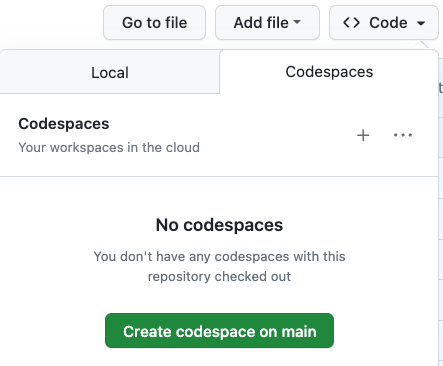
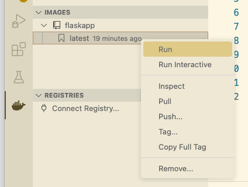
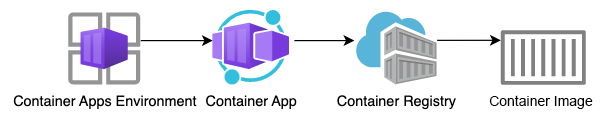
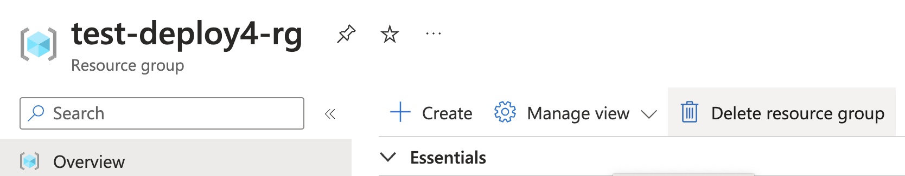

Containerizing Python
Web Apps with Docker
aka.ms/pyday-containers
- Use the left-side menu for a table of contents.
- Press the copy icon on the upper right of code blocks to copy the code
- Visit this link for a nice printable version
What we'll cover

- Intro to Containers
- Containerizing Flask
- Hosting containers on Azure
- Containers with databases
- Hosting containers on Azure with databases
Docker
The goal of containers
A container is a standard way to package an application with all of its dependencies, so that it can be run anywhere.
Docker overview
The Docker engine runs multiple Docker containers, where each container is an isolated environment.

Docker overview example
Each container can be a very different environment, with binaries and libraries dependent on the application.

The benefits of containers
- Environment consistency: Ensure that the developer environment, test environment, staging environment, and production environments are the same.
- Application portability: Easy to run the application on new hardware if old hardware fails or if application needs to scale.
- Efficient hardware use: A machine can run multiple containers to make optimal use of its resources.
Docker images
A container image is a software package that includes
everything needed to run an application.
A container is a running instance of a container image.

Docker images
Multiple containers can be run from the same image.

Image registries
A registry is a place to store and share images.
Commonly used image registries:
- Docker Hub: contains many images, including official images for python, postgres, Unix systems, etc.
- GitHub container registry
- Azure container registry
- AWS container registry
- Google Cloud container registry
Image layers
A container image often starts off with a base image, and then adds layers on top of it.
For example:
- Base image: Ubuntu 20.04
- Layer 1: Python 3.9
- Layer 2: Flask 2.0
- Layer 3: Your app
Docker can cache each layer, which improves performance.
Productionizing
Flask apps

Sample Flask app
from flask import Flask, render_template, request
app = Flask(__name__, template_folder='templates', static_folder='static')
@app.route('/')
def index():
return render_template('index.html')
@app.route('/hello')
def hello():
return render_template('hello.html', name=request.args.get('name'))
👩🏾💻 Want to follow along? Starter repo:
aka.ms/flask-docker-starter
Code: github.com/pamelafox/simple-flask-server-container-starter
Follow along with me!
Open this project:
github.com/pamelafox/simple-flask-server-container-starter
aka.ms/flask-docker-starter
Using either: 
- GitHub Codespaces ➡️
- VS Code with Dev Containers extension
- Local dev with virtual environment
Running Flask app locally
Using the built-in Flask server:
python3 -m flask run --port 50505 --debug
⚠️ The dev server is not recommended for production use.
Running Flask with gunicorn
Gunicorn is a production-level server that can run multiple worker processes.
Add gunicorn to requirements.txt:
Flask==2.2.3
gunicorn==20.1.0
Use gunicorn to run Flask app with multiple workers:
python3 -m gunicorn app:app --workers 4 --bind 0.0.0.0:50505
Configuring gunicorn
Gunicorn can be configured with a gunicorn.conf.py file:
import multiprocessing
max_requests = 1000
max_requests_jitter = 50
log_file = "-"
bind = "0.0.0.0:50505"
workers = (multiprocessing.cpu_count() * 2) + 1
threads = workers
timeout = 120
The run command can be simplified to:
python3 -m gunicorn app:app
Containerizing
Flask apps

Containerization steps
- Write a Dockerfile
- Build image from Dockerfile
- Run container using built image
Dockerfile format
A Dockerfile includes:
| The base or parent image* | FROM python:3.11
|
| Additional software | RUN pip3 install Flask gunicorn
|
| Application code | WORKDIR /codeCOPY . .
|
| Services to expose (storage/network) | EXPOSE 50505
|
| Command to run upon launching container | ENTRYPOINT ["gunicorn", "-c", "gunicorn.conf.py", "app:app"]
|
*Find existing images in registries, like Docker Hub.
Dockerfile for Flask
A complete file:
FROM python:3.11
WORKDIR /code
COPY requirements.txt .
RUN pip3 install -r requirements.txt
COPY . .
EXPOSE 50505
ENTRYPOINT ["gunicorn", "-c", "gunicorn.conf.py", "app:app"]
📖 Learn more: Docker images layer and cache
Add a dockerignore file
Prevent unnecessary files from being copied to the image:
.git*
.venv/
**/*.pyc
__pycache__/
Building the image
Using the docker build command:
docker build --tag flaskapp .
Using the VS Code Docker extension:

Running the container
Using the docker run command:
docker run --publish 50505:50505 flaskapp
Using VS Code Docker extension or Docker Desktop:

Hosting containers
on Azure!

Azure hosting options
| Cloud | Azure | |||
|---|---|---|---|---|
| Environment | Containers | PaaS | ||
| Azure Kubernetes Service | Container Management | Azure App Service | Serverless | |
| Azure Container Apps | Azure Functions | |||
For hosting containers, Kubernetes Service, Container Apps, and App Service (BYOC) are all good options.
📖 Learn more: Comparing Container Apps with other Azure container options
Hosting on Azure Container Apps
A Container Apps Environment manages a Container App.
The Container App pulls its image from an Azure Container Registry. (Other registries are also possible)
Follow along with me!
Open this project:
github.com/pamelafox/simple-flask-server-container
aka.ms/flask-docker-deploy
Using either:
- GitHub Codespaces ➡️
- VS Code with Dev Containers extension
Deploying to ACA with Azure CLI
- Get a free Azure account and subscription.
- Install the Azure CLI (already installed in Dev Container).
- Login to your Azure account:
az login - Create a resource group:
az group create --name flaskapp-rg --location eastus - Create resources and deploy the app:
az containerapp up --resource-group flaskapp-rg --name flaskapp-aca \ --ingress external --target-port 50505 --source .
Deploying to ACA with AZD
Using this repo (with Bicep files in infra folder):
github.com/pamelafox/simple-flask-server-container
aka.ms/flask-docker-deploy
- Get a free Azure account and subscription.
- Install the Azure Developer CLI (already installed in Dev Container).
- Login to your Azure account:
azd auth login - Create resources and deploy the app:
azd up
Clean up the resources
Azure Container Apps pricing is consumption based, but Azure Container Registry pricing is hourly based.
When you no longer need the resources, delete them! 🗑️
Find the resource group in the Portal and delete it there:
If you used azd, an alternative is to call azd down.
Accessing databases
from containers

Sample Flask app with DB
@app.route('/surveys', methods=['GET'])
def surveys_list_page():
return render_template('surveys_list.html', surveys=Survey.query.all())
@app.route('/surveys/', methods=['GET'])
def survey_page(survey_id):
survey = Survey.query.where(Survey.id == survey_id).first()
answers = Survey.query.where(Answer.survey==survey_id)
return render_template('survey_details.html', survey=survey, answers=answers, already_voted='survey_id' in request.cookies)
👀 Demo: aka.ms/flask-surveys-docker
👩🏾💻 Want to follow along? Starter repo:
aka.ms/flask-db-container
Code: github.com/pamelafox/flask-surveys-container-app
Follow along with me!
Open this project:
github.com/pamelafox/flask-surveys-container-app
aka.ms/flask-db-container
Using either:
- GitHub Codespaces ➡️ ➡️ ➡️
- VS Code with Dev Containers extension
- Local editor with virtual environment
Data persistence in containers
Data can be written to a container's file system, but:
- Removing a container removes the data
- Container data is difficult to move between environments
- Container storage drives are less performant
If you need to persist data, you should store it outside the container.
Docker volumes
A volume is a directory on the host machine that is mapped to a directory in the container.

When developing with databases locally, use a volume to store the data for the database.
Running PostgreSQL with Docker
Create a volume:
docker volume create postgres-data
Create a network for the containers to communicate over:
docker network create postgres-net
Run a PostgreSQL container with the volume and network:
docker run --rm -d --name db --network postgres-net \
-v postgres-data:/var/lib/postgresql/data \
-e POSTGRES_USER=app_user -e POSTGRES_PASSWORD=app_password \
postgres
Connecting the app to the DB
Set environment variables for the database connection:
DBHOST=db
DBNAME=postgres
DBUSER=app_user
DBPASS=app_password
Build the container:
docker build --tag flasksurveyscontainerapp src/
Run the app container over the same network:
docker run --rm --name flask-db-app --network postgres-net \
--env-file .env -p 50505:50505 \
flasksurveyscontainerapp
Docker compose
Docker compose is a tool for multi-container Docker apps.
docker-compose.yaml defines the services that make up your app:
services:
db:
image: postgres
restart: always
environment:
POSTGRES_PASSWORD: ${DBPASS:?database password not set}
POSTGRES_USER: ${DBUSER:?database user not set}
POSTGRES_DB: ${DBNAME:?database name not set}
volumes:
- postgres-data:/var/lib/postgresql/data
healthcheck:
test: ["CMD-SHELL", "pg_isready -U ${DBUSER} -d ${DBNAME}"]
interval: 5s
timeout: 5s
retries: 5
app:
build:
context: .
ports:
- 5000:5000
depends_on:
db:
condition: service_healthy
volumes:
postgres-data:
Run multiple containers
Run the app and database containers:
docker-compose up
Hosting containers
with databases
on Azure!
Storage in container apps
For temporary storage, you can write to file system or have an ephemeral volume in a container app.
For permanent storage, you can mount Azure Files but performance is too limited to be useful for a database.
Best approach for Azure:
Use a managed database service outside the container.
Azure managed databases services
These are just some of the options:
| Option | Description |
|---|---|
| Azure CosmosDB | Distributed database with multiple APIs, including MongoDB and Cassandra. |
| Azure Cosmos DB for PostgreSQL | Distributed database using PostgreSQL and the Citus extension. Can scale vertically and horizontally. |
| Azure Database for PostgreSQL – Flexible Server | Fully managed service with vertical scaling. |
Goal: Containerized App with PostgreSQL access

Deploying to ACA + PG with AZD
Using this repo (with Bicep files in infra folder):
https://github.com/pamelafox/flask-surveys-container-app
aka.ms/flask-db-container
- Get a free Azure account and subscription.
- Install the Azure Developer CLI (already installed in Dev Container).
- Login to your Azure account:
azd auth login - Create resources and deploy the app:
azd up
Clean up the resources
Azure Container App has usage-based pricing. Both Azure Container Registry and PostgreSQL flexible server have hourly-based pricing.
When you no longer need the resources, delete them! 🗑️
Find the resource group in the Portal and delete it there:
If you used azd, an alternative is to call azd down.
More containerized Python templates
Find lots of examples in the AZD templates gallery:
https://azure.github.io/awesome-azd/?operator=AND&tags=python&tags=aca
More resources

- Python Container Apps in Azure
- Hosting Python apps on Azure
- Getting Started with Python in VS Code
- How to optimize your Codespaces
📋 Answer our survey!
aka.ms/pydaysurvey
🙏🏻 Thank you for attending! 🙏🏾
Any questions?